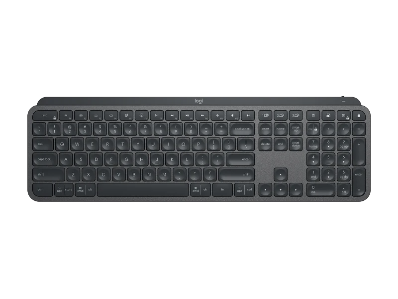

<!DOCTYPE html>
<html lang = "en"></html>
<html>
    <head>
        <title>Daniel page</title>
        <meta charset="utf-8">
        <link rel="stylesheet" href="danielstyle.css">
        <meta name="viewport" content="width=device-width, initial-scale=1.0">
    <head>
    
    <header mar>
        <nav> <!-- This Area is for Nav panel -->
            <br>
        </nav>
    
    </header>
    <hr>
    <body>  
            <div class = "header-title title-mar ">
                If Input devices does not exist
            </div>  
        
        <section >
            <div class="mar">
                <div class = "section-title">
                    Disconnected: Consequences of Absent Input Devices in development of technology
                </div>
                <br>
                    <div class="section-content">
                        First of all we need to give a definiton to input device
                    </div>
                    <br>
                        <div class="large-text">
                            An input device is a peripheral or hardware component of a computer system that allows<br>
                            users to enter data, commands, or information into the computer.<br>
                            These devices facilitate the interaction between the user and the computer by converting user-generated actions <br>
                            or signals into a format that the computer can understand and process.<br>
                            Input devices enable users to communicate with the computer, control software applications,<br>
                            and perform various tasks, ranging from typing text and moving the cursor to capturing audio or video input
                        </div>
                </div>
            </div>
        </section>
        <hr>
        <section mar>
            <div class ="section-title center-text">
                <i>Category of Input Device</i>
            </div>
            <br>
            <br>
            <div class="mar" >
                <table class="center table-box mar">
                    <tr class="table-text">
                        <th>Manual Input Devices</th>
                        <th>Sensory Input Devices</th>
                        <th>Scanning Devices</th>
                    </tr>
                    <tr>
                        <td>
                            <table class="tablet-box">
                                <tr class="table-text">
                                    <td>Keyboard</td>
                                    <td>Mouse</td>
                                    <td>Touchpad</td>
                                    <td>Drawing Tablet</td>
                                </tr>
                                <tr>
                                    <td></td>
                                    <td></td>
                                    <td></td>
                                    <td></td>
                                </tr>
                            </table>
                        </td>
                        <td>
                            <table>
                                <tr class="table-text center">
                                    <td>Microphones</td>
                                    <td>Webcams</td>
                                    <td>Gesture Controls</td>
                                    <td>Biometric Devices</td>
                                </tr>
                                <tr>
                                    <td></td>
                                    <td></td>
                                    <td></td>
                                    <td></td>
                                </tr>
                            </table>
                        </td>
                        <td>
                            <table>
                                <tr class="table-text center">
                                    <td>Document Scanner</td>
                                    <td>Barcode Scanner</td>
                                </tr>
                                <tr>
                                    <td></td>
                                    <td></td>
                                </tr>
                            </table>
                </table>
            </div>       
        </section>
        <hr>
        <section clas="title-mar">
            <div class = "header-title title-mar">
                what would happen if input devices does not exist?
            </div>
            <div class="large-text a center mar">
                <ul>
                    <li>Limited Interaction: Without input devices, basic interactions such as typing, clicking,<br>
                        and navigating graphical interfaces would be impossible, severely restricting users' ability to engage with computers.</li>
                        <br>
                    <li>Functionality Constraints: Software applications, games, and digital tools would lose their<br>
                        utility as there would be no means to provide instructions, commands, or input data, leading to a significant reduction in overall functionality.</li>
                        <br>
                    <li>Digital Stagnation: The absence of input devices would bring computers to a standstill,<br>
                        disrupting the core mechanisms of human-computer interaction and hindering technological progress.</li>
                        <br>
                    <li>Communication Breakdown: Daily access to information and communication would be disrupted,<br>
                        impacting the individuals engage with and rely on technology in their day-to-day lives.</li>
                        <br>
                    <li>Technological Impediment: The entire landscape of technology, heavily reliant on diverse input devices,<br>
                        would face a drastic alteration, posing challenges to the development and usability of digital systems.</li>
                        <br>
                </ul>
            </div>
        </section>
        <hr>
        <footer>
            <div class="footer">
                <h3>All rights reserved to Group 11 MMU university</h3>
            </div>
        </footer>
    </body>
</html>